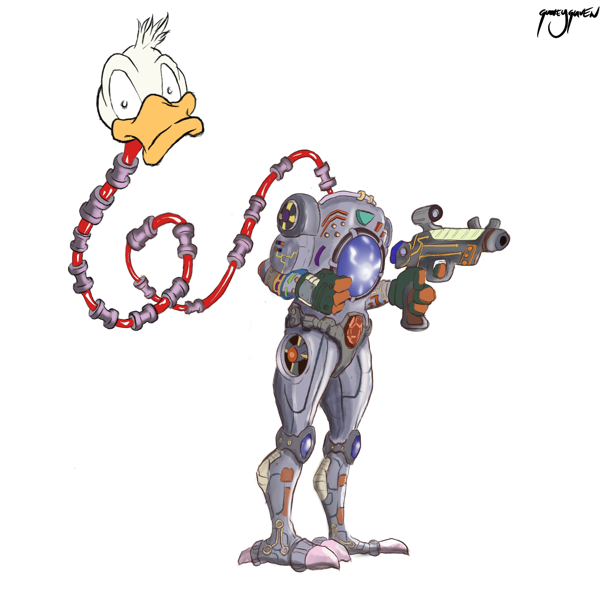
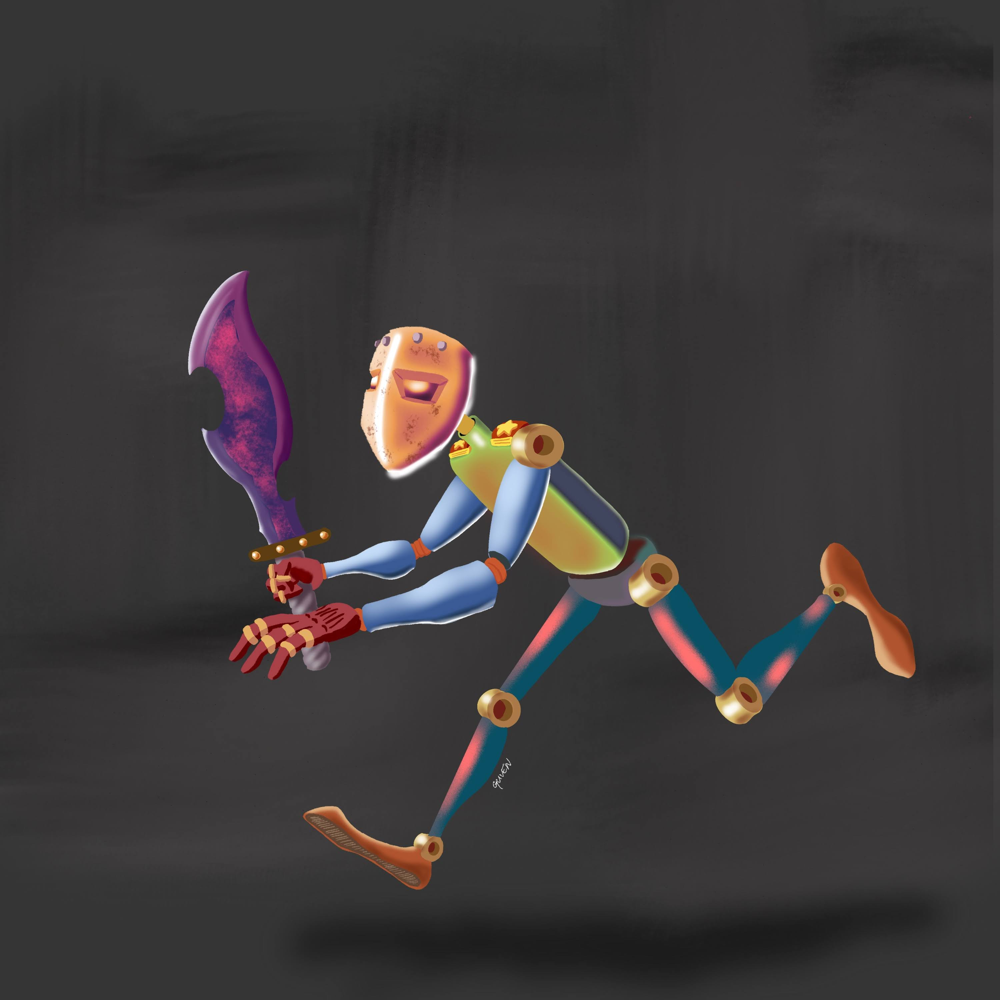
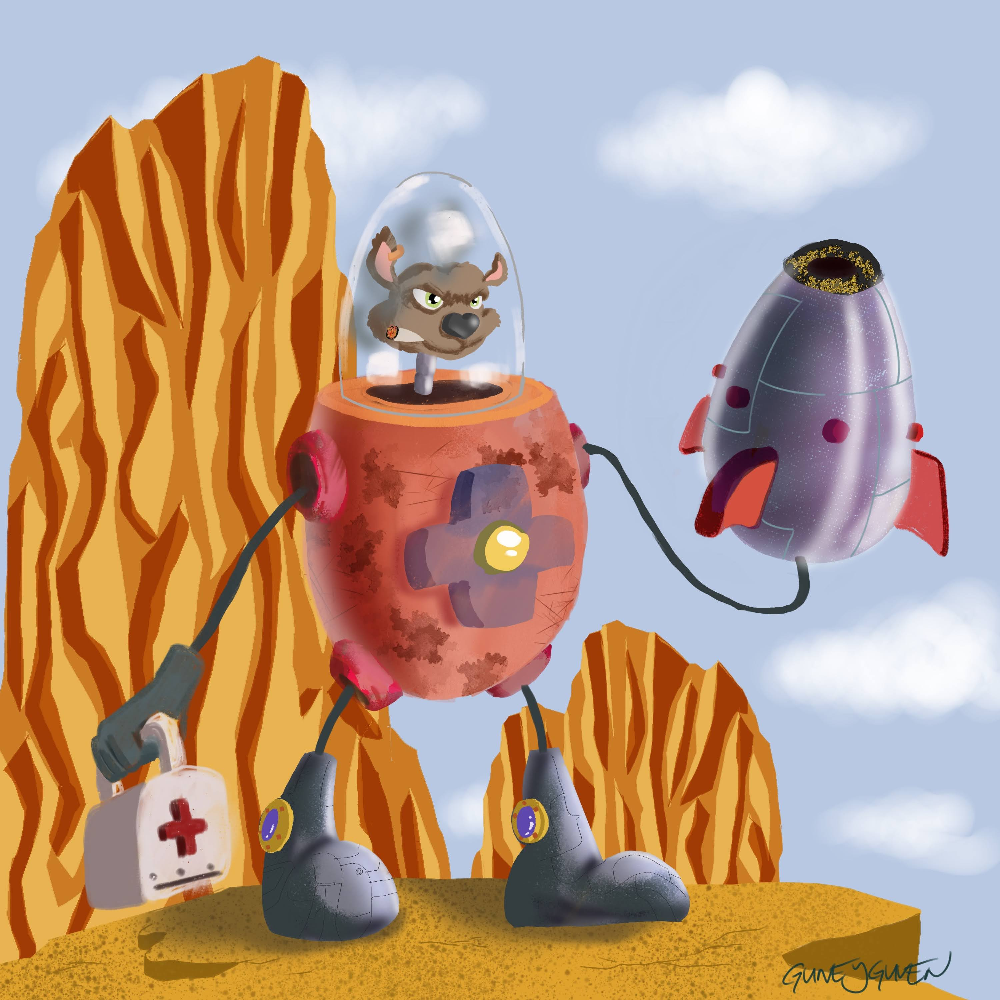

Projects
From ideas
to real results.
A selection of work across software, research, project management and creative development.

Robo Duck
Robo Duck is a personal universe where art, storytelling and game mechanics come together. What started as a character sketch evolved into a full game concept with its own world, items and systems.
View visual work →
Run
A visual study from my digital-art practice, built around movement, atmosphere and character.
View art →
Bomber
Character-focused visual development combining design, storytelling and digital painting.
Explore the collection →